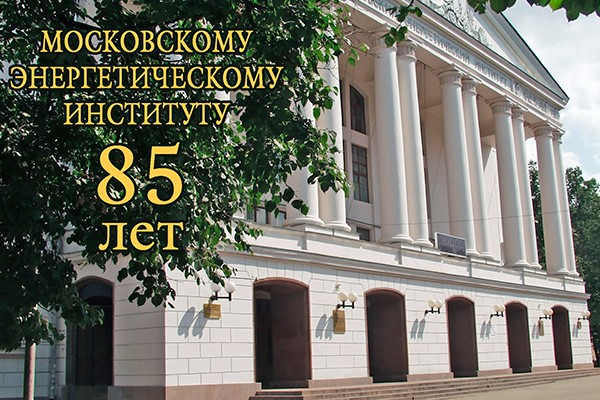

МЭИ готовит инженерные и научные кадры для иностранных государств начиная с 1946 года.
В настоящее время в МЭИ обучаются студенты и аспиранты из 68 стран мира
За успехи в подготовке инженеров и научных кадров МЭИ награжден двумя государственными орденами и шестью орденами зарубежных государств.
МЭИ является постоянным членом Международной ассоциации университетов, Международной ассоциации непрерывного образования, Международного компьютерного клуба и Международной ассоциации энергетиков.
Институты в составе МЭИ
| Институт энергомашиностроения и механики | ЭнМИ |
| Институт тепловой и атомной энергетики | ИТАЭ |
| Институт проблем энергетической эффективности | ИПЭЭф |
| Институт электротехники | ИЭТ |
| Институт электроэнергетики | ИЭЭ |
| Институт автоматики и вычислительной техники | АВТИ |
| Институт радиотехники и электроники | ИРЭ |
| Гуманитарно-прикладной институт | ГПИ |
| Инженерно-экономический институт | ИнЭИ |
| Институт дистанционного и дополнительного образования | ИДДО |
Филиалы МЭИ
г. Смоленск (http://sbmpei.ru/)
г. Волжский, Волгоградская область (http://www.vfmei.ru/)
г. Конаково, Тверская область (http://energokolledge.ucoz.ru/)
г. Душанбе, Республика Таджикистан (http://df.mpei.ru/)
МЭИ располагает развитой инфраструктурой
К услугам студентов